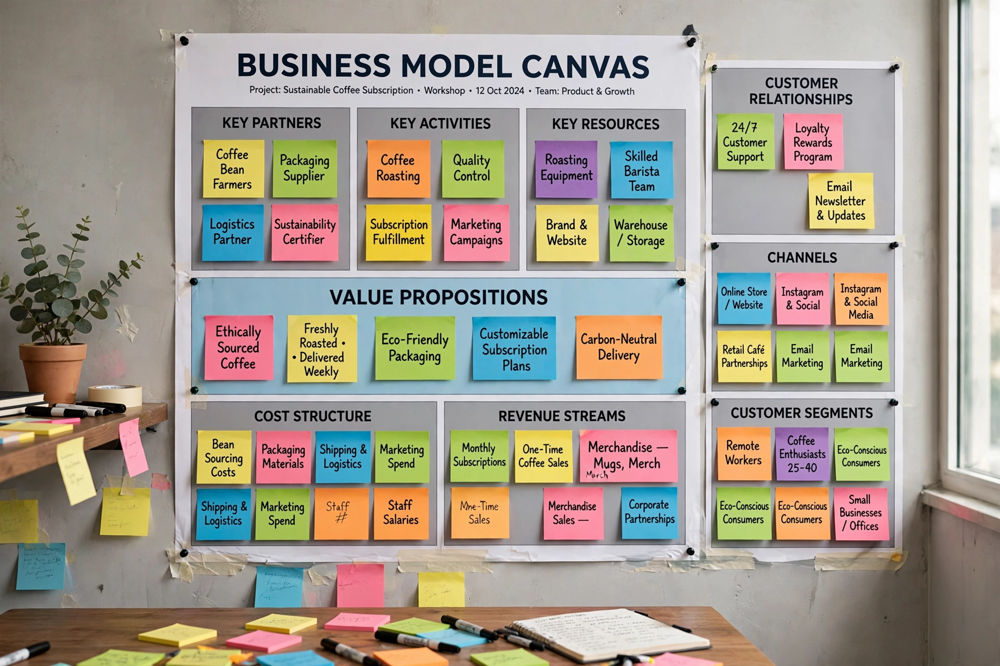

 The Business Model Canvas template | |
| Developer | Alexander Osterwalder |
|---|---|
| Published | 2008 (developed); Business Model Generation (2010) |
| Type | Strategic management template |
| Components | 9 building blocks |
| Licence of template | Creative Commons (CC BY-SA) |
The Business Model Canvas is a strategic management template used for developing new business models and documenting existing ones. It offers a visual chart with elements describing a firm's or product's value proposition, infrastructure, customers, and finances, assisting businesses to align their activities by illustrating potential trade-offs. The canvas was developed by Swiss business theorist Alexander Osterwalder, based on his earlier work, and popularised in the 2010 book Business Model Generation, co-authored with Yves Pigneur.
The canvas is printed on a large surface so groups can sketch and discuss the business model together, typically with sticky notes. It is widely used by startups and established companies, and it underpins related tools such as the Lean Canvas (adapted by Ash Maurya for startups) and the Value Proposition Canvas. Critics note that the canvas is static, omits strategy and competition, and can oversimplify, but its simplicity and shared vocabulary have made it one of the most popular management frameworks in the world.